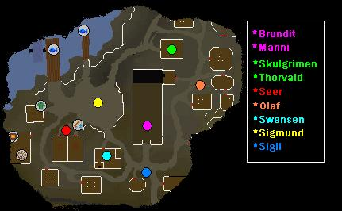
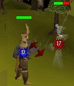
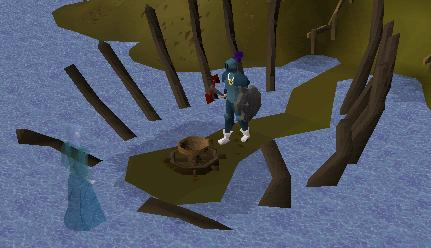
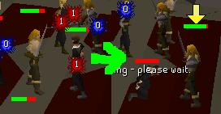
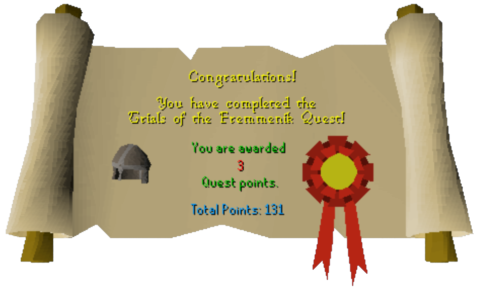

The Fremennik Trials
Description: Council workmen have at last found the time to make repairs to the footbridge that connects Kandarin with the Barbarian town of Rellekka. Do you have what it takes to impress the barbarians who live there, and perhaps be welcomed as an honorary member of their clan? (Complete seven tasks to be granted admittance into the Fremennik clan.)Difficulty: Medium
Length: Long
Items & Skills Needed:
- 40 Crafting
- 25 Fletching
- 40 Woodcutting
Recommended:
- Medium/High combat level (Mage or Range optional)
Reward: 3 Quest Points, 2813 experience in Strength, Attack, Defence, Hitpoints, Crafting, Agility, Thieving, Fletching, Woodcutting, and Fishing. Ability to speak and trade with Fremennik villagers and steal from stalls. You keep the lyre you make, which can be re-enchanted to teleport you to Rellekka (one teleport per enchantment).
Instructions:

Talk to Brundt in the main building with the quest icon. Ask him how to get into the Fremennik clan. He'll tell you that you need a majority vote from the 12 members of the council (7 Votes). You can do the below 7 tasks to get the 7 votes in any order you choose.
Manni the Reveller
Talk to Manni in the bar, he'll offer his vote if you can manage to defeat him in a drinking contest.
Grab a keg and a beer off the table just north of him and challenge him, you'll lose.
Now head down to Seer's Village. Make sure you have 250 gp with you and talk to the Poison salesman just west of Camelot.
After a long and boring speech about his new product, ask to purchase some.
You now have low alcohol beer. Head to the Second bridge (beside the lvl 64 Wolf) and use your regular beer on the Council workman. He'll give you a Strange object (a cherry bomb).
Head outside to the east of the Longhall (quest start building). You'll see a pipe.
Use your cherry bomb with your tinderbox and then use the lit bomb on the pipe.
Now run back into the building and use your low alcohol keg on a regular keg. Challenge Manni again and you'll win.
Swensen the Navigator
Now talk to Swensen in the building just a bit south west of the quest start. He'll tell you to complete his maze for a vote.
Head down the ladder into the maze, you'll be in a room with four portals in each direction.
Take the portals from room to room in this direction and order: South, West, East, North, South, East, North (They spell out Swensen, in case you haven't noticed.)
Head up the ladder and you've finished his challenge.
Sigli the Huntsman
Now speak with Sigli, just a bit south east of the last building. He'll tell you that you'll need to defeat the Draugen for his vote.
Accept his challenge and receive the Hunter's talisman.
Head just south of the village towards the woods and click your talisman to begin the long, boring process of finding the Draugen.
Keep following the directions til he finally appears and attacks you. A tip for those who're a bit lazy. Just stand along the riverbed until he appears. He'll be level 69, so be ready.

After you defeat him, it will automatically collect his essence in the Hunter's talisman. Bring this back to Sigli and you've gotten one more vote.
Olaf the Bard
Now head north east from Sigli and talk to Olaf.
Talk to him once more; you'll now need to create your lyre. (You can also just kill Lanzig until he drops a lyre.)
Head south out of the village and follow the path east to a hill with a tree icon.
Cut the Swaying tree and fletch the branch.
Southeast of the tree, talk to Lalli the troll. Ask him about the other human.
Now you must find Askeladden back in the village, just south of the quest start. Get the pet rock from him. Stop at the garden near the gate to get an Onion, Potato and Cabbage.
Talk to Lalli again, and you'll offer to make him some rock soup.
Use on the cauldron, in this order, your rock, onion, potato, and cabbage (which can be obtained near the entrance to the village).
After, talk to him again to get your golden fleece.
Now spin your fleece and attach it to the lyre. The closest spinning wheel is in Seers' Village. You can't use the one in Rellekka yet, since you aren't accepted into the clan.
Now head to the Fossegrimen, south west of the entrance to the village (just go west after you cross the second bridge on your way back from Seers'.)
Place your Raw shark on the strange altar and she'll appear to enchant your lyre.

Head back to the Longhall (quest start location), just on its' east wall is a smaller building, head inside and walk past the bouncer onto the stage.
Now play your lyre and after the cheesy lyrics are over, you'll receive one more vote.
Sigmund the Merchant
Now speak with Sigmund in the market area, just west of where the quest start is. He'll ask you to find a rare flower for him.
Now run a bit north west towards the larger dock and talk with the sailor, he'll want a romantic ballad.
You'll need to visit Olaf, ask him to compose you a ballad and he'll say he needs sturdy boots.
Speak with Yrsa in the clothing shop, then head back to the main hall.
Speak with Brundt and proceed on to Sigli.
Sigli will request a special bowstring.
Now head to the helmet shop and talk to Skulgrimen, he'll request a rare fish for the string.
Head towards the smaller dock, just west of there and speak with the Fisherman, he'll request a map from the Navigator, who's just south.
After speaking with the Navigator, proceed on to the Seer for the weather forecast.
The Seer will ask for a body guard.
Head to the helmet shop and speak to Thorvald, he'll want a seat in the Longhall. You'll now want to talk to Manni.
After Manni requests the cocktail speak with Thora.
Thora will request a contract from Askeladden, he's just outside.
He'll request 5000 gp; pay him.
Once you have the paper, head back through the people in this order Thora, Manni, Thorvald, Seer, Navigator, Fisherman, Skulgrimen, Sigli, Brundt, Yrsa, Olaf, Sailor, and then back to Sigmund. Now you have another vote!
Thorvald the Warrior
Now remove all weapons and armor, stash them in the Seer's bank and Speak to Thorvald in the helmet shop. He'll ask you to defeat his warrior 4 times in a battle to the death without weapons or armor.
Use food for the first two fights and prayer on the 3rd, if you have it. As the fourth battle begins your prayer will be drained to 0, don't bother wasting anymore food.

Let Koschei defeat you and you'll be teleported upstairs. If you choose to fight him, bring prayer pots, food, and use several rings of recoil as he only hits 1's, but 3-4 hits per second. It is not required to defeat him in order to complete the quest. If you use Protect from Melee prayer and do not kill him fast enough (within 20 minutes), he gets bored with you and leaves. Congratulations, one more vote.
Peer the Seer
Talk to Peer who is located south of the stalls. To get this guy's vote, you need to simply make it through his house!
Yet again, you'll need no armor or weapons for this part.
Once you have disrobed, try to open the door. You'll find that you need to solve a riddle.
After reading through the riddle, choose the option to solve it.
The possible answers for this riddle are Wind, Fire, Mind, Mage, Tree, Life, or Time.
Now go inside and up the ladder.
You're now in a room filled with many boxes which has a range, bookcase, cupboard, frozen table, etc.
Search everything in the room to gather materials for this puzzle. The only materials you'll need are: the red disk, the wooden disk (eyes of head on the wall upstairs), red herring, bucket, jug.
Cook the herring on the range to get sticky red goop.
Use the goop on the wooden disk to make it match the red disk.
Next, go downstairs and use them on a strange mural.
This should give you the lid to a vase.
Now you need something not too heavy and not too light for the balance on the chest.
Using a bucket (gathered from the cupboard) and a jug try to get a bucket that's 4/5ths filled with water. (To get the water for the bucket, use the bucket on the tap which is above the drain).
1 jug = 3/5 bucket
Aim: 4/5 bucket
- Use the bucket with tap
- Use bucket on jug
- Empty jug down drain
- Use bucket on jug again you now have an empty bucket and a 2/3 full jug
- Use the bucket with tap
- Use full bucket on 2/3 full jug to get 4/5 bucket of water.
Once you have a bucket 4/5ths filled with water, use the bucket on the scale on the chect to open the chest.
You'll get a vase.
Use the vase on the tap to fill it with water.
Close the vase by using the lid on it.
Now use the closed vase on the frozen table.
It will shatter and give you a frozen key.
Use the key on the range to melt the ice.
Now use the key downstairs to exit the house! Congratulations, you have just received another vote!
Finishing Up
Once you have the 7 votes, head back to Brundt and claim your reward.
Note: Talk to Olaf after finishing the quest and he will tell you a secret: The Enchanted Lyre teleports to Rellekka have been slightly tweaked: offerings of raw shark will now give you 2 teleports to Rellekka before your lyre needs re-enchanting, but offerings of sea turtles and manta rays will allow you 3 or 4 teleports before you need to re-enchant your lyre.
Congratulations, Quest Complete!

This quest guide was written by Zancross, Pequ, Broodgamerdx, Monkeymatt, Shakeshaft, trekkie, darkgade, and Nalian. Thanks to DRAVAN, Monkeymatt, Slow Cheetah, flatlander20, TheRulnig, drunk_faerie, odedex, Ponteaus, Broken Darkness05, fireball0236, run the walk, slamball, Albel111, xiaoweiqiang, and RPMemperor for corrections.
This quest guide was entered into the RuneHQ.com database on Wed, Nov 03, 2004, at 04:04:18 PM by MrStormy and Monkeymatt and was last updated on Tue, Nov 15, 2005, at 09:22:34 PM by DRAVAN.